コロニー百景 (Qol Mk1 @ 745サイクル）
コロニー百景 (Qol Mk1 @ 745サイクル）
r7kamuraさんの以下のエントリをみたので、自分のわりと上手く行ってる745サイクル目のコロニーを淡々と紹介。
コロニーの全体的な状態としては、ある程度安定しつつあるが、エネルギー供給がまだ若干不足気味で、移送チューブを含め自動化をあまり進められてない。鋼鉄が充分たまるまで宇宙にはいかないように注意してる。
またこのマップには精錬された金属が噴出する火山が今のところ一個も見当たらないので、全て自前で作成する必要があるのが若干辛い。
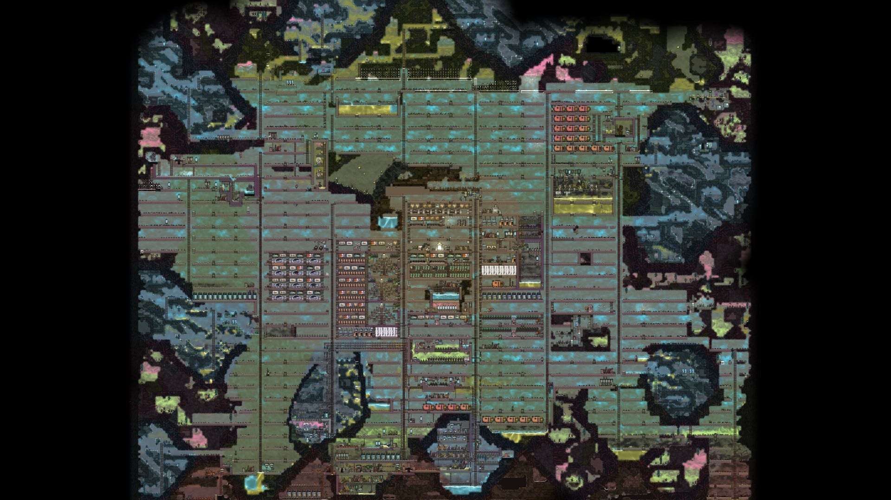
基本設計
前にも書いたけど、24x4マス（上下左右のタイルは含めず）の部屋をとにかく作りまくる。上記画像のような完全な碁盤の目のようになる。
16x4派の人のも見るので、そのうちそっちでやるかもしれない。ただ16x4だとどうしても上下に部屋を伸ばさないと96マスの部屋を作れないのでどうしたもんやら。それとも96マスとかは諦めればいいのか。
寝室
特に設計がどうということはないが、QoLアップグレードで来たさまざまな装飾品がカラフルでとても楽しい。
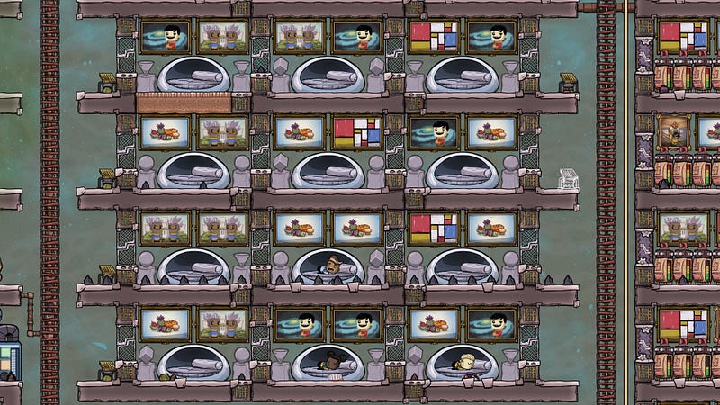
貯蔵庫
本当はもっと高度に自動化された貯蔵庫を作りたいのだが、今のところそのための電力が足りない。しょうがないので、せめて働いてて楽しい貯蔵庫にしている。幅の関係で隣はブロッソム畑となっている。
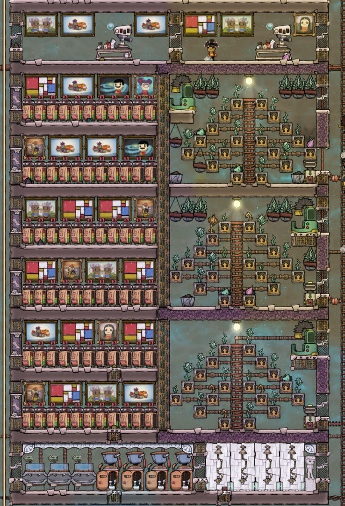
食料庫
食料庫は省エネ型二酸化炭素部屋である。自動化を試みたが、色々な制限で挫折してる。
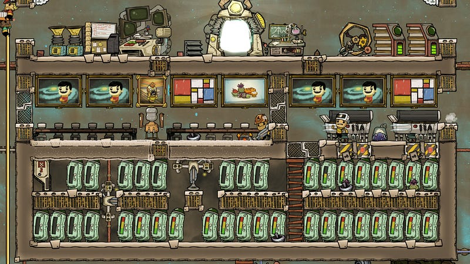
食料庫の上にはキッチン部屋があるが、ここはひとつだけ工夫がしてある。
複製人間達は折角調理をしたのに、そこにそのまま食量を置いて行ってしまう事が多い。そのままでは腐ってしまうので、電気グリルの間にある時計センサーと連動し、真夜中に一瞬だけでグリルの下のドアを自動的に開けてしまう。こうすることによって、どんなに長く忘れ去られていても、1日以内に調理済みの食量は二酸化炭素部屋に落ちていく。
本当は掃除機を使おうと思っていたが、よくよく考えたらこっちのほうが省エネだった。ちなみにこの状態でだいたい2,000,000kcalくらい貯蔵してる（この時点での複製人間の数は16人）。
スケジュール
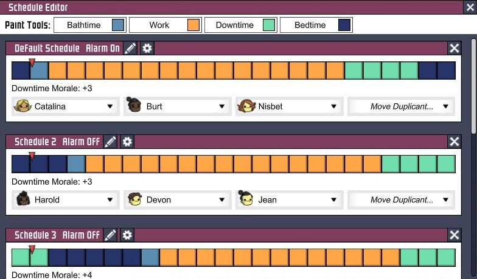
この時点では5シフトしいている。少しずつずらしつつ、ストレスが溜まりやすい複製人間用に「休み時間を増やす」と「睡眠時間を増やす」感じにしたシフトがある。睡眠時間を増やすのは、移動距離が長い複製人間用。移動距離が長いとその分寝る時間が減ったりしている… みたい。確証はない。
諸々エリア
トイレからの汚染水を濾過する仕組みを作り、その後少しずつ埋まっていったエリア。
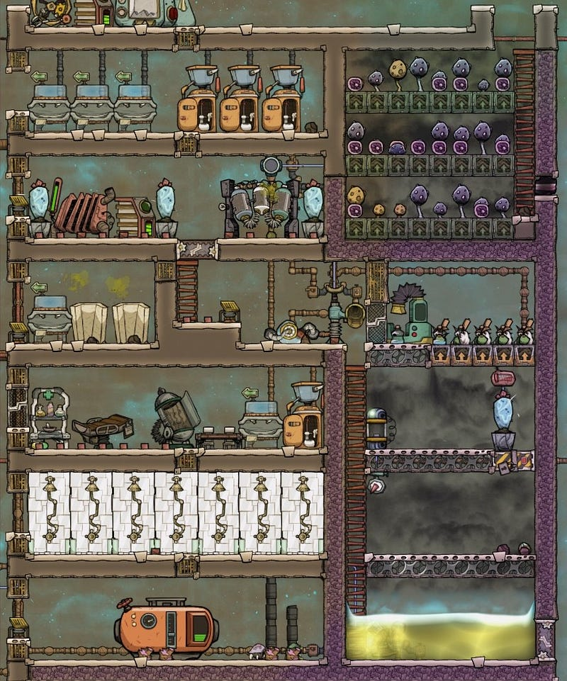
大きくは左側のトイレやシャワーで使った汚水が上部にある浄水装置を通ってまたもとのシステムに戻っていく感じになっている。それ以外にも、後述の電解機部屋等や、他の場所にあるトイレ施設からの汚水もここに流れてきて、プールされる。
汚水のくみ上げは、自然の流れで足りてる時は行われないが、浄水装置の真上にあるパイプに真水が存在しないことを検知すると、右下のポンプが動き出して汚染水を送り出すようになっている。
また、汚染水を流し込んでいく過程で、同時にシンブルリードにも水を送る。汚染水が切れてしまうと色々支障があるので、ここは小さい畑を作り、回転率をあげることによって汚染水の消費を抑えている。
右上のダスクキャップ畑は場所が微妙に空いたのと、掘り出す前はそこに二酸化炭素が溜まっていたのでついでにつくってみた。
酸素供給（テラリウム）
今回酸素供給は2箇所で行ってる。ひとつはテラリウム部屋。全体のバランスが整い始めて、余剰水素が出始めた時に作った。
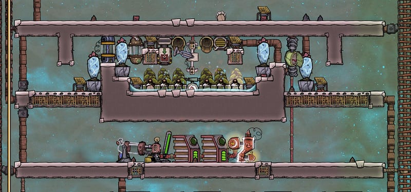
真ん中のハイドロセンサーで一定量以上の水が溜まらないようにしつつ、バルブで1500g/sec の水を流してる。汚染水がある程度溜まるので、そこから排出される汚染酸素が逃げ出さないように部屋の形を整え、さらに脱臭装置でガードしてる。
30℃前後の水をかけているのと、30℃強の酸素がでてくるので、ウィーズウォートで冷やした酸素が外部に漏れていくようにしてる。
水冷却装置
浄水装置から作られる40℃弱の水をブリッスルブロッソムの栽培に回している。そのまま使うと当然熱すぎて枯れてしまうので、一旦冷却している。
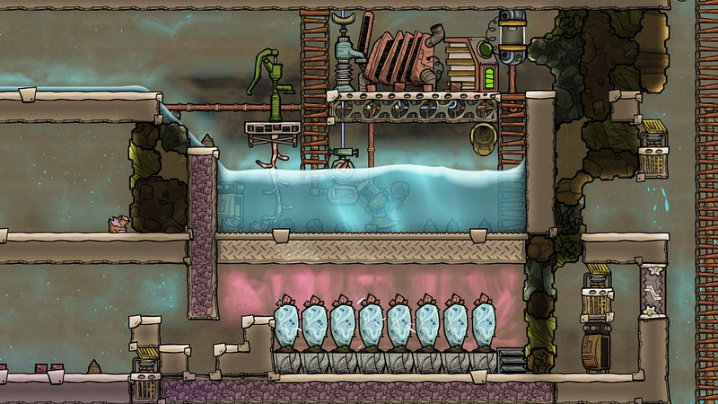
このプールでは、水の温度が20℃以下にならないと畑に送られない。冷やすためにウィーズウォートを並べて、そこに水素を充満させている。なおこれは基地構築初期にやったため、水素を溜めるために簡易に二酸化炭素エアロックを使ったのがわかる。
浄水装置からの真水は、このプールの水の量が一定以下になった時のみ追加されるようになっている。時々冷却がおいつかなくてブリッスルブロッソム畑が停滞するが、それも見越しての食量の大量貯蓄を行っている。
また、水の中に入ってるストレージには、つねに氷を雪を最優先で格納する設定にしている。こうしておくと寒冷バイオームを探検した時にでてきた氷と雪をそのまま水の冷却と、とけきった時にはキンキンに冷えた水として使える。
酸素供給（電解機）
こちらは電解機ベース。右側にあるのは90℃のお湯が噴き出してくる間欠泉。
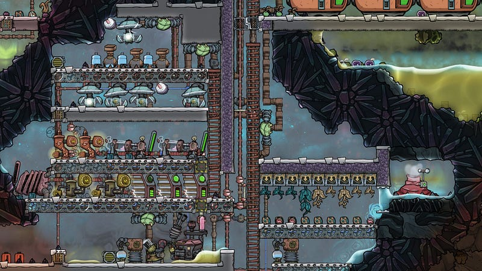
間欠泉の左隣にはドアが設置され、画像では見えないが、下にあるプールにハイドロセンサーがついていて、水が充分溜まっている時はドアが閉まるようになっている。
元々はなるたけクローズドなシステムにしようとしていたのだけれども、とにかく酸素の温度がえぐかったりして色々やらざるを得ず、結局この左隣にあるバイオームから石油をもってきて電気を供給するはめになった。
石油発電機は汚染水が作られるのでそれを別の場所にくみ上げているが、それならばついでにと炭素スクラバーで二酸化炭素も除去しつつ、高温のお湯を40℃まで落とした状態で一緒にくみあげてる。
右側の炭素スクラバーはピンチャペッパーに汚染水を供給。間欠泉のおかげでピンチャペッパーが育つのに最適な温度に常になっていてラッキー。ちなみに、この程度の栽培量で結構持つ。
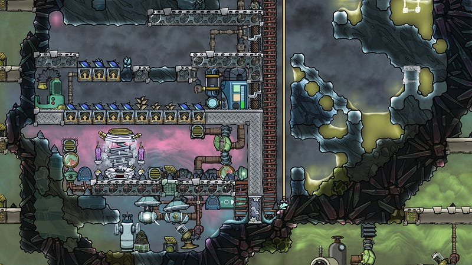
電解機部屋のちょっと向こうにこの寒冷バイオームがある。
仕組みとしては、電解機部屋で作られた水素をAETNに提供しつつ、もしAETNのまわりに充分な量の水素がなければ部屋の中に放出している。これでAETNの冷気を充分に蓄えた水素（-30℃くらい）が溜まる。
同じ空間に、電解機部屋で50℃くらいまでに煮えたぎった酸素が送られてくる。これは水素に触れた瞬間に一気に温度がさがり、下のポンプの位置に移動するまでにはだいたい0~10℃くらいまで落ちてる。水素もかなり熱くなってしまうが、熱容量が高い分、全体としての温度変化はかなり少ないので、継続的に酸素を冷やすことができる。
冷えた酸素はポンプ2台でコロニー中心部へと送られていく。
これらの装置と、汚染酸素をこまめに酸素に変換することによって全体的に酸素を完全に行き渡らせることに成功している。
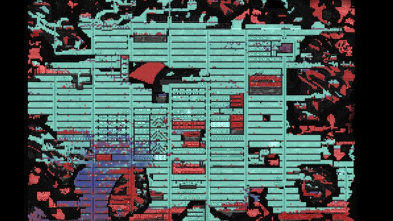
また、この部屋の寒さを利用して、小規模なスリートウィート畑を作っている。水を冷却する時間もふくめ約40サイクルで収穫がある感じ。
ガスエリア
今のところこのマップには天然ガスを排出する間欠泉が1個しかない上、それほど大量のガスがでてこない。そのため一旦序盤ではこの天然ガスを使う事を諦め、充分なバッファを作る事に専念した。
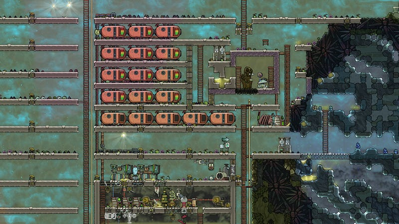
全てのタンクに充分たまってから、諸々の稼働を開始したので、今のところ一進一退を繰り返しながら、結構長い間石炭発電にたよることなく保っている。
オキシライト生成／藻抽出／巨大水槽
上記の天然ガスから得られるエネルギーを使って、オキシライトを作っている。オキシライトは酸素から作るのだが、これをやっておくと水素をたくさんほしいがために酸素も大量にできてしまう、というのをある程度避けられる。
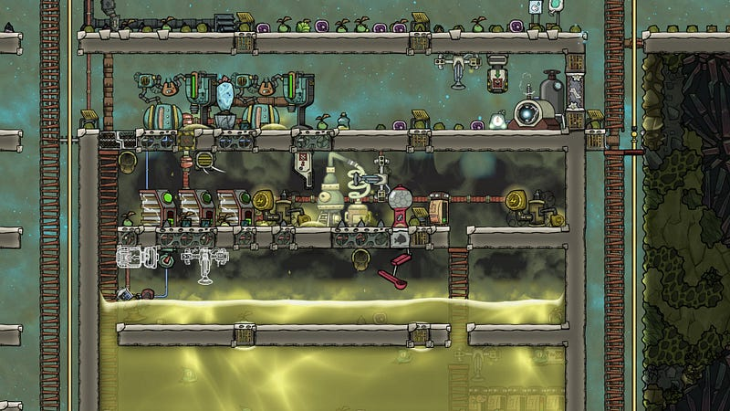
右上で生成されたオキシライトは右下のストレージに送られ、自動的に格納される。水の中に置いておけばオキシライトはムダに酸素となって消費されることはない。なお、オキシライトは宇宙に出る時にロケットに詰め込む必要があるので、最初に作っておいても損は無い。
水が大量にあるついでに、卵の殻と肉目当てで水槽を作る事にした。設計ミスでまだ水が足りていないが、自動的にヘドロを持って来て藻を抽出する仕組みと、そこからできた藻を自動的に魚用給餌機に送り込む装置は完成している。あとは水かさがあがっていけば…
石油部屋
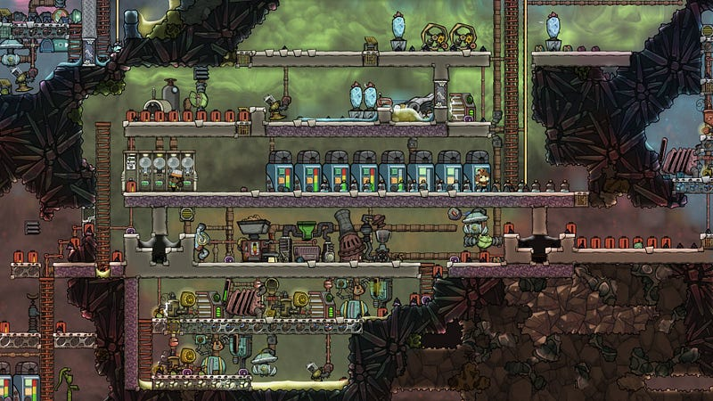
石油関連施設を集めてある。左下に大きな油田があり、そこからくみ上げた原油をまず精錬装置に冷却剤として送り、100℃程度の高温になったものを精製して70℃くらいの石油としてとりだす。
石油は上のタンクにバッファとして溜められる。
プラスチックはタンクに繋がっているが、温度計とリンクしており、45℃以下にならないと動作しないようになってる。当然45℃にするためには冷却が必要で、ウィーズウォート2個でなんとかなっているが本来ならもう一個くらいは欲しい。
オキシライト生成装置が見えるかもしれないが、これは作ってみたものの、電力供給の都合で「ここじゃ無理」となって今は使っていない。
油井と水源
原油供給用に油井をひとつだけ稼働している。
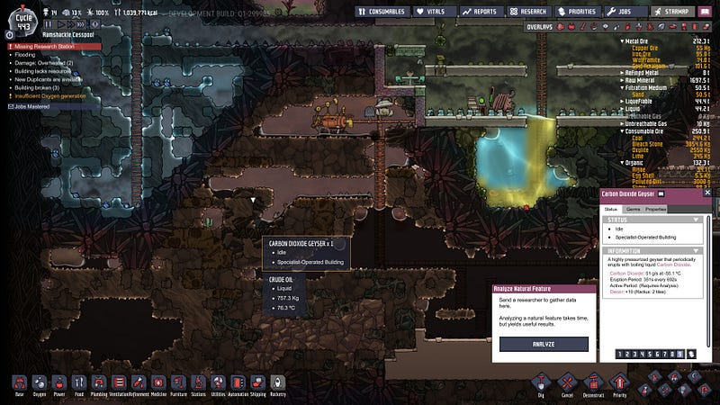
このために使う水は温度はなんでもいいので、高い温度の水を使いたいが、あいにく一番温度の高いのは酸素生成用に電解機部屋でつかってしまっている。
マップの中に110℃の水蒸気を出す間欠泉が二つ、比較的近いところにあったのでこれらはがっちゃんこして使う事にした。
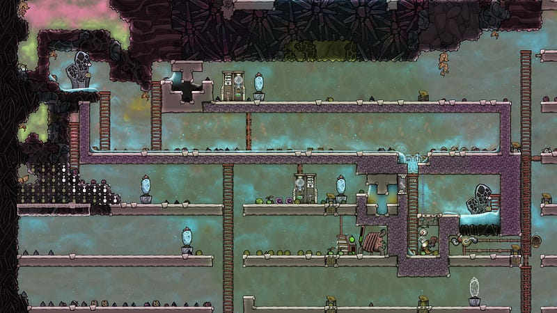
この二つの間欠泉、実はそれぞれひとつだけでは油井を継続的に稼働させるには若干水蒸気の量が足りない。なのでまず右下の間欠泉から水を集めるが、足りなくなった時には自動的に上の間欠泉から続くドアが開くようになっている。
スクリーンショットを取ったタイミングでは一番水が少ないタイミングだったが、実は上の部屋は水蒸気がわりと満タンなので、上の水蒸気が下の部屋の空気に触れるとすぐ水となっておちてくるので、見た目よりたくさん水を供給することができる。
ポンプ部分に水が充分にあるときは上の部屋は閉じられて、そちらで水蒸気をためておく。
なお、一応断熱タイルで一通り囲ってあるが、ウィーズウォートを置かないとこのあたりは真っ赤になってしまう。
温度管理
間欠泉のところ等で軽く触れたが今回特に上手く行っているのはウィーズウォートを中心とした全体的な温度管理。とにかくちょっと前からアビサライトで完全断熱することができなくなってしまっているので、熱の浸透が辛い。
とりあえず今回は今まで怠けていた基本を全部真面目にやることにした。
- とにかく可能な限り全ての配管を断熱材で作る
- 一番熱いバイオームと寒冷バイオームまわりのアビサライトはなるたけ崩さない（熱を下手に逃がさない）
- 少し落ち着いたらすぐウィーズウォートをあちこちに置いて、周辺が30℃以下まで冷えたら少し移動して、を繰り返す
のような事をして全体的に良い感じの温度になってる。
以下のような配置にしたウィーズウォートをじりじりと動かす事によって基地全体を赤から少なくとも安定した黄色くらいまで温度を調節することが可能。
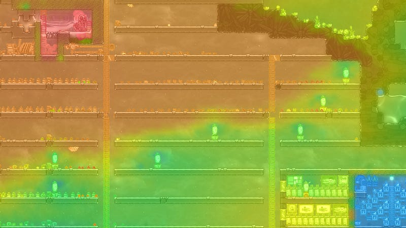
ハッチ部屋
エネルギー源があまりなくて石炭は結構使うので、96タイルのハッチ部屋が三つある。
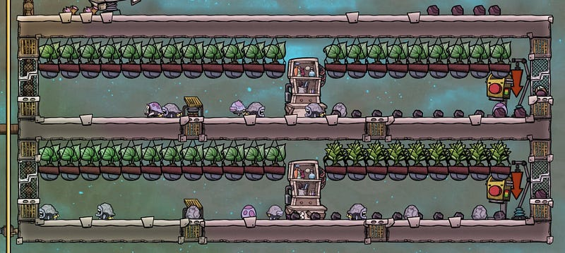
もうひとつくらい作らないといけないかもしれない。
シャインバグ部屋
明るいと士気があがるので、シャインバグを育てている。
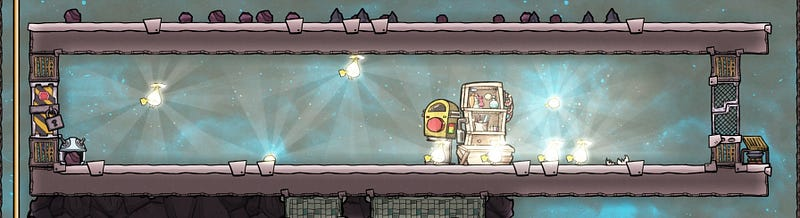
とはいえ、ひとつの部屋にたくさんいてもしょうが無いので、新しくできたクリッターセンサーで最大数を管理している。部屋の中のシャインバグの数が８を超えると、センサーに反応して左側のドアが開き、シャインバグが逃げられるようになる。
逃げた先で適当に照らしてくれる。それ以外にも、世代交代が早いので、卵の殻がたくさんたまる、という利点がある。鋼鉄を作るのに便利。
ドレッコ部屋
ドレッコはその毛を刈る事に意味がある、と思っていた時代が僕にもありました。
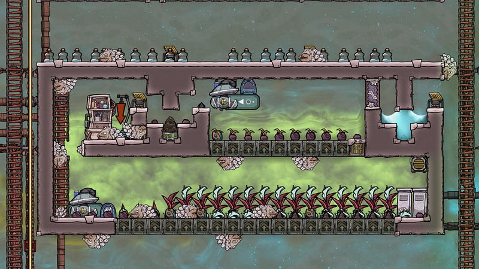
このようなドレッコ部屋を作ったのは毛のためではなく、ドレッコが排泄物として燐灰土を出してくれるので、それをシャインバグのエサにできるからです。
また、ドレッコのエサになるバームリリーは、水等一切与えなくても、塩素の中に置いておけば育つのですごく楽。
この部屋の工夫としては、ドレッコの手入れをするために、わざと酸素がたまる部屋を作る事。そうしないと複製人間が呼吸ができなくて手入れの途中で退出してしまう。
その他
- 今回からEXOスーツを「たくさんドックを作って、一箇所から出入り」方式から、「必要なところにちょこちょこドックを作る」方式に変えてみた。石炭でエネルギーが賄えるので、意外とこの方法で充分だと気がついた。なので間欠泉の手前や、まだ未開のエリアの手前だけに最低1つ〜最大4つのドックを揃えていく方式にしてる。
- このマップには汚染酸素を吐き出す間欠泉が二つもある。脱臭すればよい酸素のソースになるが、それでは水素が作れない。ロケットを飛ばす段階で大量の酸素が必要になる時に使えるかもしれない。
- 二つめのAETNが見えているが、まだ届いていない。近くに水素の間欠泉があるがいかんせん排出量がすくなくてどうしたもんか、という感じ。
- QoLアップグレードで大分ストーリーに関する情報が増えた。ちょこちょこ読んでるとおもしろい。
今後
24人くらいまで人を増やして、生活空間をもう一つ作ろうと思っている。今だと大きく下半分と上半分にわかれているので、今後でてくる宇宙開発をベテラン勢にまかせ、基本メンテナンスだけになる下半分を若者に任せるイメージ。
当面の課題はエネルギー源。